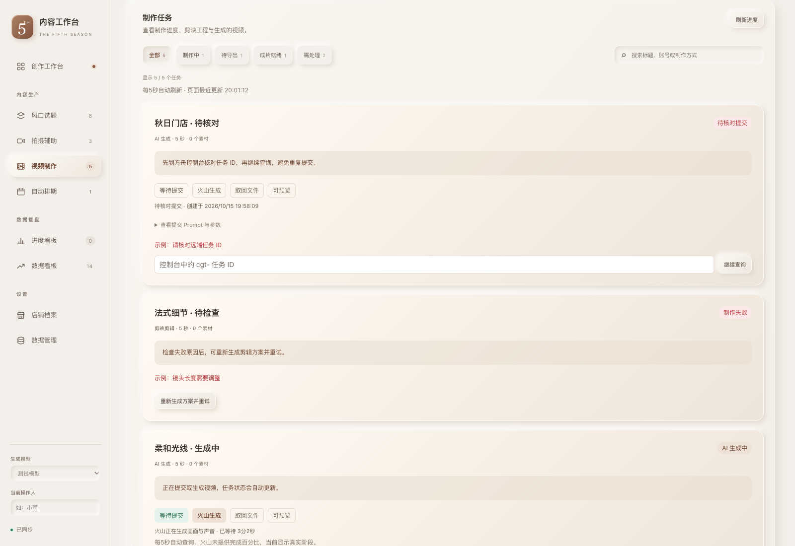
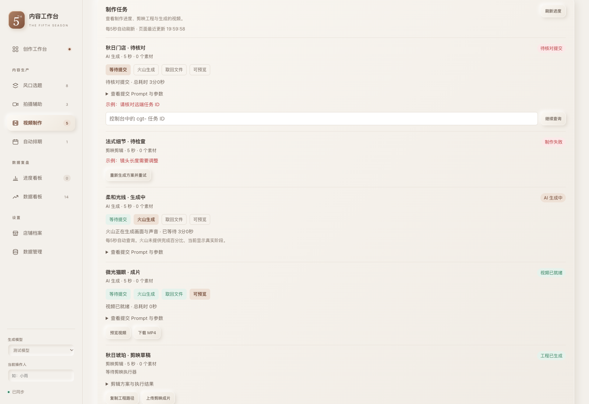
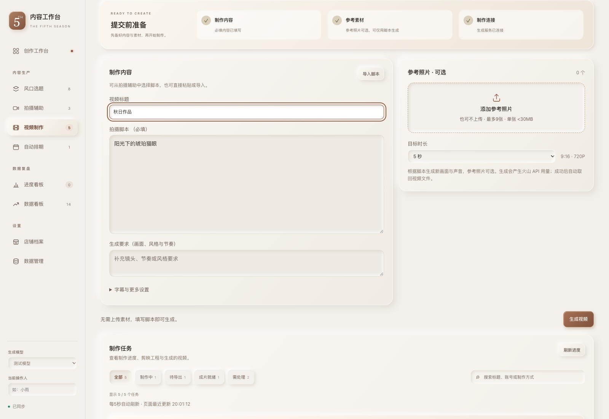
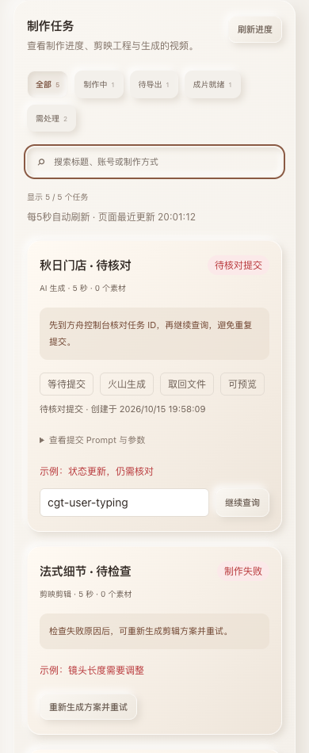

备好内容，看清每一步制作。
提交前检查内容、素材和连接；任务按真实状态筛选，每条任务显示下一步。
以下为模拟服务与隔离任务的浏览器截图，没有执行真实制作、上传或导出。




剪映草稿仍需在剪映内检查和导出 MP4。筛选不触发制作；刷新保留核对输入、展开详情和键盘焦点。
提交前检查内容、素材和连接；任务按真实状态筛选，每条任务显示下一步。
以下为模拟服务与隔离任务的浏览器截图，没有执行真实制作、上传或导出。




剪映草稿仍需在剪映内检查和导出 MP4。筛选不触发制作；刷新保留核对输入、展开详情和键盘焦点。